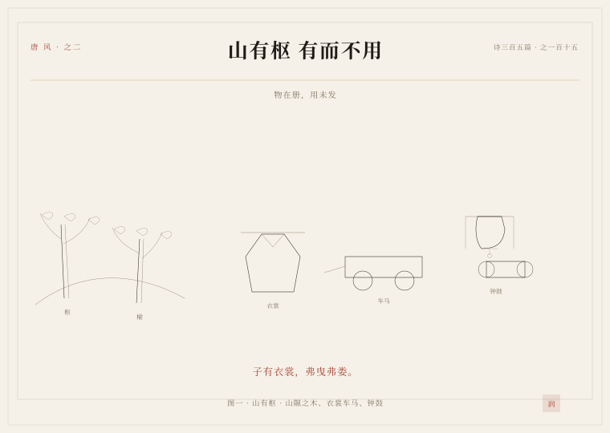
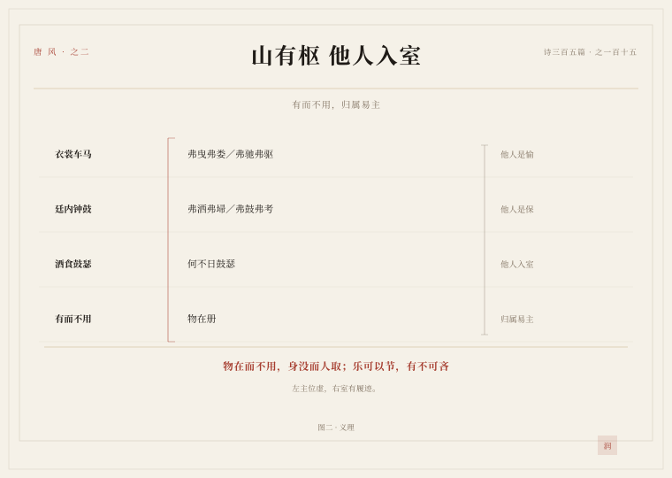

第一百十五篇 山有枢
唐风 · 之二 SJ115
朗读 · 普通话
依经文原文朗读，章次不读出；配古琴底乐，不改速、不加拖腔。全库同一音色（豆包 TTS），非播音员录制。
一 解题
诗三判：
- 谁在说：晋人。见国君有衣裳车马而不服不乘，有廷内钟鼓而不洒不考，有酒食而不日鼓瑟；一旦宛然死矣，皆归他人。
- 说什么事：三章只换枢/栲/漆、榆/杻/栗、衣裳/廷内/酒食、娄/埽/瑟、愉/保/入室。物皆在，用皆废；今日之有，他日之人。
- 为何编在此：114 戒“好乐无荒”，115
反激“有而不能用”。前篇劝俭者以礼为乐，此篇刺吝者以货为祟；同卷两面，不可读作一种调子。
《毛序》：“《山有枢》，刺晋昭公也。不能修道以正其国，有财不能用，有钟鼓不能以自乐，有朝廷不能洒埽，政荒民散，将以危亡，四邻谋取其国家而不知，国人作诗以刺之也。”
朱子《诗集传》：“兴也。枢，荎也，今刺榆也。榆，白枌也。娄，亦曳也。驰，走。驱，策也。宛，坐见貌。愉，乐也。此诗盖亦答前篇之意而解其忧，故言山则有枢矣，隰则有榆矣；子有衣裳车马，而不服不乘，则一旦宛然以死，而他人取之以为己乐矣。盖言不可不及时为乐，然其忧愈深，而意愈蹙矣。”
本库的看法：《山有枢》是一首把“吝”写成“待他人”的诗。
山有木、隰有木，木不能自用其材；人有货、有乐、有庭，而不能自用其有。“宛其死矣”三复，不是劝乐，是把死后的归属摆在眼前。
断语：物在而不用，身没而人取；乐可以节，有不可吝。
先辨五事：“娄”是曳、牵衣，不是“楼”；“考”是击，不是“考试”；“保”是安、居，不是“保护”；“廷内”是庭与室，不是“朝廷内部”；“永日”是引长此日，不是“永远一天”。
二 经文
第一章
山有枢，隰有榆。
子有衣裳，弗曳弗娄。
子有车马，弗驰弗驱。
宛其死矣，他人是愉。
第二章
山有栲，隰有杻。
子有廷内，弗洒弗埽。
子有钟鼓，弗鼓弗考。
宛其死矣，他人是保。
第三章
山有漆，隰有栗。
子有酒食，何不日鼓瑟？
且以喜乐，且以永日。
宛其死矣，他人入室。
分章：三章，章八句。
三 韵读
- 一章：榆、娄、驱、愉，侯部；枢句首不韵。
- 二章：杻、埽、考、保，幽部；栲句首不韵。
- 三章：栗、瑟、日、室，质部；漆句首不韵。
读法：三章皆以山隰之木起兴，下接衣裳车马／廷内钟鼓／酒食鼓瑟；韵脚自侯而幽而质，所写之物由身及庭及日，一层宽一层，而归结皆在“他人”。
四 字义与名物
- 枢：荎，即刺榆。榆：白榆。兴也：山隰之木各有其材而不能自用，喻人有财货而不能用。
- 曳：引衣著身。娄：亦曳也，马云“牵也”。驰：走马。驱：策马。
- 宛：毛传“死貌”，朱传“坐见貌”；本库从“宛然将死之貌”读。愉：毛传“乐也”，郑笺读曰“偷”，取也；毛说为乐，郑说为取，二义相承：他人得而乐之。
- 栲：山樗。杻：檍木。廷内：庭与室。洒：散水涤地。埽：扫除。
- 考：击也。保：毛传“安也”，郑笺“居也”；从郑笺“居而有之”，与末章“入室”相贯。
- 漆、栗：皆木名。瑟：琴瑟之瑟；古者无故不彻琴瑟。永：引长。入室：居而有之。
五 今译
山上有枢木，洼地里有榆木。您有衣裳，却不穿不曳；您有车马，却不驰不驱。一旦宛然死去，都成了他人的快乐。
山上有栲木，洼地里有杻木。您有庭室，却不洒水不扫除；您有钟鼓，却不击鼓不敲击。一旦宛然死去，都成了他人的安居。
山上有漆树，洼地里有栗树。您有酒食，何不日日鼓瑟？姑且以此喜乐，姑且以此延长时日。一旦宛然死去，他人走进您的屋室。
六 章旨
- 一章：写“衣裳车马”。身外之服与乘，皆不用；不用则为他人之愉。
- 二章：写“廷内钟鼓”。治政之处与礼乐之器，皆不治不考；不治则为他人之保。
- 三章：写“酒食鼓瑟”。日长可以喜乐，而吝不肯为；不肯为则他人入室。
- 总收：三章由身而庭而日，所有皆废；“宛其死矣”三复，刺在有而不能用。
七 诗教
- 兴：山有枢、隰有榆，以木之材不可自用起兴；兴在“有而不能用”，不在山水。
- 观：观“吝”怎样把家国变成寄存之物。财货、钟鼓、廷内，件件在册；政荒民散，主人不知。
- 群：子与他人相对；一为有而不用之主，一为取而居之之人，两境在死后交接。
- 怨：怨在“他人是愉/是保/入室”；怨不指一人，指其有国而不能守；末章“何不日鼓瑟”，反语之中含深忧。
八 分寸与边界
- 不可把此诗读成劝人挥霍享乐。它刺的是有而不能用；一读成纵欲，就与114“好乐无荒”相背。
- 不可把“他人”读成具体仇家。它指四邻与后来者；一读成指名道姓，诗就成了谤书。
- 不可把“宛其死矣”读成诅咒。它是设身处地的悬想；一读成咒人死，恻怛之意尽失。
- 不可把“弗洒弗埽、弗鼓弗考”读成懒惰。它是不能修道、不能用礼；一读成偷懒，刺君之旨就落了浅。
- 不可把三章之物读成铺张排比。衣裳、廷内、酒食各有一层；三章递进，不是同义复沓。
九 存疑
- 诗旨：毛序“刺晋昭公，有财不能用”；朱子以为“答前篇之意而解其忧，言不可不及时为乐”。本库从毛序“刺吝”读，朱传“及时为乐”作为诗中反激之语并存。
- “愉”：毛传“乐也”，郑笺“读曰偷，取也”。乐与取二义相承，本库两存，不专主一说。
- “保”：毛传“安也”，郑笺“居也”。安居与居有义近，从郑笺以贯“入室”。
- “娄”：毛传“亦曳也”，马云“牵也”；韩诗外传作“屡”，娄、屡古通。从曳、牵之义。
- 作者与史事：毛序系于晋昭公；诗中“他人入室”是否预指曲沃之夺，旧无明文。史事背景存疑，不坐实。
十 跨典
- 《史记·晋世家》：晋昭侯封叔父成师于曲沃，是为桓叔；其后沃盛强、晋微弱，五世而曲沃灭翼。——序所谓“四邻谋取其国家而不知”；此诗“他人入室”正是后来事的先声。
- 《左传·桓公二年》：“晋穆侯之夫人姜氏，以条之役生太子……”曲沃之封始此。——封沃之本末；诗中“子”与“他人”，即昭公与沃人。
- 《庄子·知北游》：“人生天地之间，若白驹之过隙，忽然而已。”——“宛其死矣”之叹；庄语达观，诗语忧蹙，所感一而所怀异。
- 《诗经·唐风·蟋蟀》：114 戒“好乐无荒”，115
刺“有而不能用”；前篇以节立教，后篇以吝为戒，对读方见唐风之厚与蹙。
十一 双卡与图
双卡八对：
| 娄（曳、牵衣） |
娄（楼） |
| 考（击） |
考（考试） |
| 保（居而有之） |
保（保护） |
| 廷内（庭与室） |
廷内（朝廷内部） |
| 永日（引长此日） |
永日（永远一天） |
| 宛（宛然将死之貌） |
宛（委屈） |
| 愉（乐／取） |
愉（愉快心情） |
| 入室（居而有之） |
入室（进门） |

图一 · 山有枢 山隰之木、衣裳车马、钟鼓

图二 · 山有枢 有而不用，他人入室
读图三处：
- 山隰之木：图一左山右隰，枢榆栲杻漆栗分株而立，只画干枝与叶形，不画成林；木是兴，不是园圃。
- 器物：衣裳悬而未曳，车马停而未驰，钟鼓悬而未考；物皆在册，用皆未发。
- “他人”在右：图二左主位虚框，右一室一履迹，朱线自左穿向右室；有而不用，归属易主。